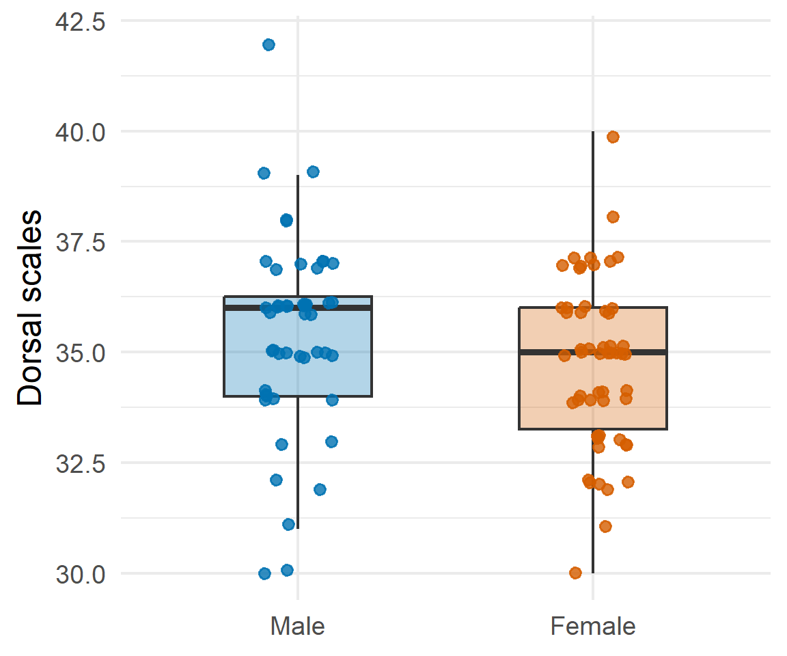
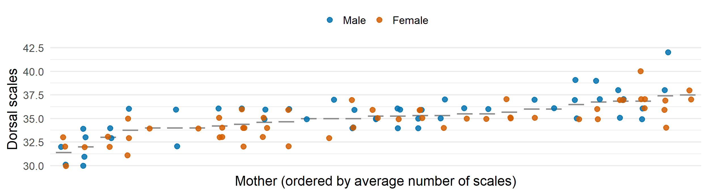
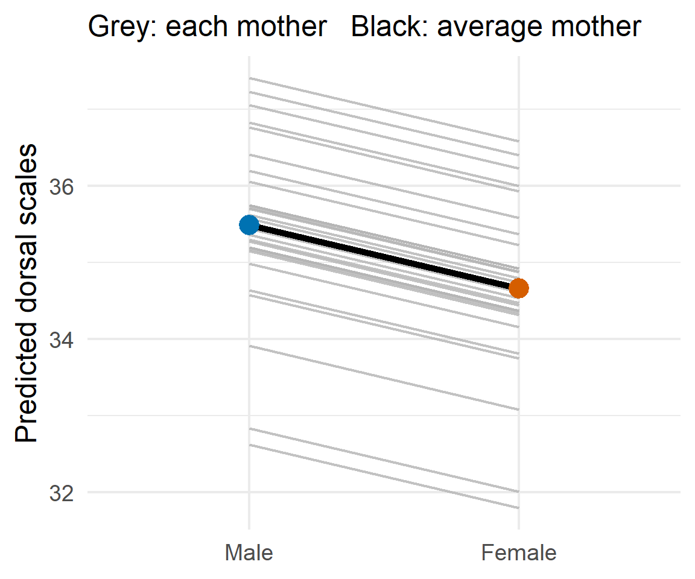
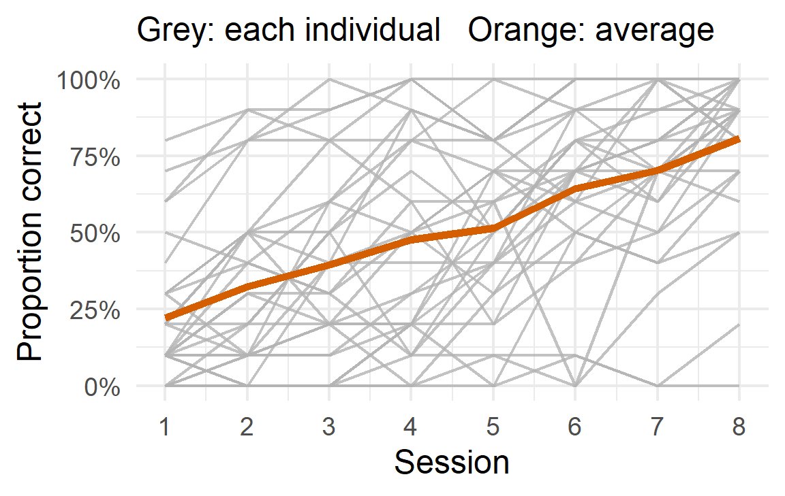
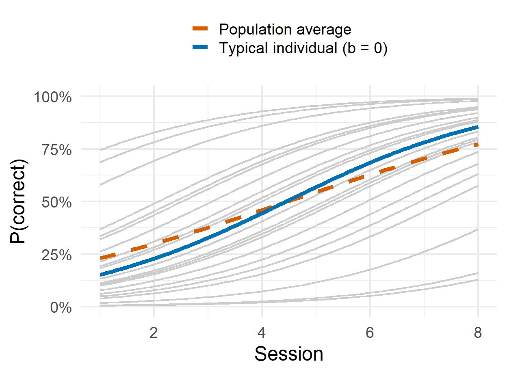
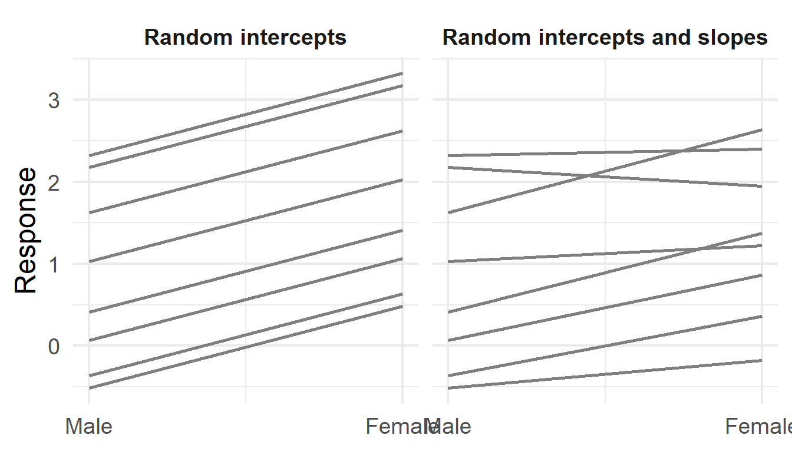

| Statistic | Value |
|---|---|
| Mean (males) | 35.40 |
| Mean (females) | 34.72 |
| Difference (males - females) [95% CI] | 0.67 [-0.14, 1.48] |
| t (df) | 1.65 (100) |
| p-value | 0.102 |
Lightning Introduction to Generalized Linear Mixed Models
Mauricio Moreno, PhD
Today’s goals
By the end of this session, you will be able to:
- Recognise when your data are grouped (repeated trials, siblings, individuals in social groups) and why that breaks the independence assumption.
- Explain what a random intercept is and what the intraclass correlation tells you.
- Choose between a linear mixed model and a GLMM based on the type of your response.
- Interpret the coefficients of a GLMM as effects for the typical individual.
At the end, we turn these goals into three questions to ask about your own data.
What is a linear model?
Simply put, a linear model is a mathematical equation that predicts a continuous dependent variable (\(y\)) as a linear combination of one or more predictors (\(x\)):
\[ y = \beta_0 + \beta_1 X_1 + \beta_2 X_2 + \cdots + \beta_n X_n + \epsilon \]
Where:
- \(\beta_0\): intercept
- \(\beta_1, \dots, \beta_n\): effects of the predictors
- \(\epsilon\): residual error, assumed \(\epsilon \sim N(0, \sigma^2)\)
What does “linear” mean?
- Linear does not mean the relationship between \(x\) and \(y\) has to be a straight line. It means the model is linear in the parameters (\(\beta\)).
- Predictors can be transformed (e.g., \(X^2\), \(\log X\)) and it is still a linear model, as long as each \(\beta\) only multiplies a term and is added up:
- \(y = \beta_0 + \beta_1 X + \beta_2 X^2 + \epsilon\) ✅ linear (a curve!)
- \(y = \beta_0 \, e^{\beta_1 X} + \epsilon\) ❌ not linear, because \(\beta_1\) sits inside the exponential
One model, many names
Many methods you already know are special cases of the linear model:
- Simple and multiple linear regression: predicts a continuous \(y\) from one or more predictors.
- t-test: compares two group means (one binary predictor).
- ANOVA: compares two or more group means using categorical predictors.
- ANCOVA: combines categorical and continuous predictors to compare group means, adjusting for a covariate.
- Generalized linear models (GLM): extend the idea to other types of responses, such as binary (logistic regression) or counts (Poisson regression), by linking the mean of \(y\) to the predictors through a link function.
All of them assume that observations are independent. What happens when they are not?
A simple question
102 lizards. Do males and females differ in the number of dorsal scales?
t.test(dors ~ sex, data = lizard, var.equal = TRUE)
Conclusion: no evidence of a sex difference… right? Note the df = 100: R treats all 102 lizards as independent.

But wait… who are their mothers?
The 102 lizards come from 29 mothers.

- Lots of variability between mothers (grey bars = mother averages).
- Within a mother, males tend to have more scales.
- Siblings are more alike than unrelated lizards: observations are not independent.
Hierarchical data
“Hierarchical data are obtained when the sample is taken at multiple, hierarchically ordered, levels.”1
Our lizards:
- Level 2: 29 mothers
- Level 1: 102 lizards (sex measured on each lizard)
Also known as:
- Repeated measures
- Longitudinal data
- Multilevel data
- Clustered or correlated data
Hierarchical data are usually not independent. The key question is: how do we account for the association between observations from the same cluster?
Option 1: mother as a fixed effect?
\[ y_{ij} = \beta_0 + \underbrace{\beta_1 \, \text{mother}_i}_{28 \text{ parameters}} + \beta_2 \, \text{sex}_{ij} + \epsilon_{ij}, \qquad \epsilon_{ij} \sim N(0, \sigma^2) \]
| Term | Df | Sum Sq | Mean Sq | F | p-value |
|---|---|---|---|---|---|
| mother | 28 | 251.74 | 8.99 | 3.87 | < 0.001 |
| sex | 1 | 16.73 | 16.73 | 7.19 | 0.009 |
| Residuals | 72 | 167.37 | 2.32 |
- It works: the sex effect, tested after adjusting for mother, is now significant (\(p\) = 0.009).
- But it spends 28 parameters (row mother,
Df) just on the mothers. - And we are not interested in these 29 mothers, but in lizard mothers in general.
Idea
Treat the mothers as a random sample from a population of mothers, and estimate how much they vary.
The linear mixed model
\[ y_{ij} = \beta_0 + \alpha_i + \beta_1 \, \text{sex}_{ij} + \epsilon_{ij} \]
\[ \alpha_i \sim N(0, \sigma^2_{mother}), \qquad \epsilon_{ij} \sim N(0, \sigma^2) \]
- \(i\): mother, \(j\): lizard within mother
- \(\alpha_i\): random intercept, each mother has her own baseline
| Fixed effects | |||||
|---|---|---|---|---|---|
| Term | Estimate | SE | df | t | p-value |
| (Intercept) | 35.49 | 0.34 | 48.5 | 103.71 | < 0.001 |
| sexFemale | -0.83 | 0.32 | 85.4 | -2.57 | 0.012 |
Row sexFemale: females have 0.83 fewer scales than males, comparing within mothers.

How alike are siblings?
The random effects part of summary(fit_lmm) splits the total variability into two parts:
| Random effects | ||
|---|---|---|
| Group | Variance | Std. Dev. |
| mother | 1.78 | 1.33 |
| Residual | 2.25 | 1.50 |
\[ \underbrace{4.03}_{\text{total}} = \underbrace{1.78}_{\sigma^2_{mother}} + \underbrace{2.25}_{\sigma^2} \]
Intraclass correlation (ICC): \(\rho = \frac{\sigma^2_{mother}}{\sigma^2_{mother} + \sigma^2} = 0.44\)
Two lizards from the same mother are correlated with \(\rho \approx\) 0.44. The larger the ICC, the more it matters to account for the grouping.
What if \(y\) is not continuous?
Remember \(\epsilon \sim N(0, \sigma^2)\)? It breaks down for many outcomes in research:
- Binary: chose the correct option, looked at the target (0/1)
- Counts: number of vocalisations, aggressive interactions
Example (simulated): 30 individuals do a learning task, 10 trials per session over 8 sessions. Outcome: correct (1) or not (0).
Like a GLM, we model the log-odds through a link function:
\[ \text{logit}(\pi) = \log\frac{\pi}{1 - \pi} \]

The generalized linear mixed model (GLMM)
\[ \text{correct}_{ij} \sim \text{Bernoulli}(\pi_{ij}), \qquad \text{logit}(\pi_{ij}) = \beta_0 + b_i + \beta_1 \, \text{session}_{ij}, \qquad b_i \sim N(0, \sigma^2_b) \]
| Fixed effects (log-odds scale) | |||||
|---|---|---|---|---|---|
| Term | Estimate | SE | z | p-value | Odds ratio |
| (Intercept) | -2.21 | 0.32 | -6.90 | < 0.001 | 0.11 |
| session | 0.50 | 0.03 | 18.95 | < 0.001 | 1.65 |
| Random effects | ||
|---|---|---|
| Group | Variance | Std. Dev. |
| id | 2.57 | 1.60 |
- Row session: \(\hat\beta_1 =\) 0.50 on the log-odds scale. For a typical individual, the odds of a correct answer are multiplied by 1.65 per session.
- Std. Dev. of
id: \(\hat\sigma_b =\) 1.60, individuals differ a lot in their baseline performance. - No
Residualrow: for binary data, the trial-to-trial variability comes from the Bernoulli distribution.
One thing to remember

- Grey: predicted curve for each individual.
- Average curve ≠ curve of the average individual.
- In a GLMM, the coefficients describe the typical individual, not the population average.
In a linear mixed model the two coincide. With a link function (logit, log), they do not.
Before you fit a mixed model, ask…
- What are my units, and how are they grouped? (trials in individuals, individuals in groups, …)
- What type is my response? Continuous, binary, count: this chooses the family and link.
- Is my question about the typical individual or the population?
Next session
A hands-on session in R: fitting, reading and checking LMMs and GLMMs with lme4, ideally with your own data.
Later on: random slopes and crossed random effects (e.g., participants and items).
Thank you!
Credits
Data
- Lizard dataset courtesy of Prof. Geert Verbeke (KU Leuven), available at gbiomed.kuleuven.be
- Verbeke, G. & Molenberghs, G. (2000). Linear Mixed Models for Longitudinal Data. Springer.
- Molenberghs, G. & Verbeke, G. (2005). Models for Discrete Longitudinal Data. Springer.
Images
Cover photo by Pat Whelen in Unsplash
Ending photo by PARK HONG KYU in Unsplash
Annex
Annex: ICC for a GLMM
In a logistic GLMM there is no residual variance to plug into the ICC. A common solution is to think of a continuous latent propensity behind each 0/1 outcome:
\[ y^*_{ij} = \beta_0 + b_i + \beta_1 \, \text{session}_{ij} + \epsilon_{ij}, \qquad y_{ij} = 1 \text{ if } y^*_{ij} > 0 \]
With a logit link, \(\epsilon_{ij}\) follows a standard logistic distribution, whose variance is fixed:
\[ \text{Var}(\epsilon_{ij}) = \frac{\pi^2}{3} \approx 3.29 \]
Here \(\pi\) is the number 3.14…, not a probability. This ICC lives on the latent (logit) scale: it describes how alike two trials of the same individual are in their underlying propensity. On the observed 0/1 scale, the correlation depends on the probability itself, so it is not a single number.
Annex: typical individual or population?
Typical individual (subject-specific)
How does the probability change for a given individual?
- What a GLMM estimates directly: effects for an individual with \(b_i = 0\)
- E.g., how fast does an animal learn the task? Does an infant look more at the target in condition A than in B?
- Session 8: 86% correct for the typical individual
Population average (marginal)
How does the proportion change across the population?
- Averages over all individuals, including the very good and the very poor
- E.g., what share of infants look at the target? What proportion of a colony shows a behaviour?
- Session 8: 77% correct on average
Getting the population average: average the GLMM predictions over the random effects (as on “One thing to remember”), or fit a marginal model directly, e.g. with generalized estimating equations (GEE, geepack::geeglm()), which estimate population-average effects while accounting for the correlation within clusters. For a logistic random-intercept model, approximately:
\[ \beta_{pop} \approx \frac{\beta}{\sqrt{1 + 0.346\,\sigma^2_b}} = \frac{0.50}{\sqrt{1 + 0.346 \times 2.57}} = 0.36 \]
Annex: one study, two questions
Example: a word-learning training for toddlers. Each child is tested on 20 trials before and after the training: did the child look at the named object (1) or not (0)?
The developmental psychologist
“Does the training help a child learn words?”
- Interested in the learning process within a child
- Compares the same child before and after
- Typical individual: read the GLMM coefficient directly, as an odds ratio for a given child
The daycare network
“If we offer the training in all our centres, how many more children will recognise the words?”
- Interested in the share of children who succeed
- Plans for the whole population, good and poor learners alike
- Population average: average the GLMM predictions over children, or fit a GEE
Same data, same model, two valid questions. The population-average effect is smaller than the typical-child effect, so always say which one you report.
Annex: fixed or random?
Treat a factor as random when…
- its levels are a sample from a larger population (mothers, individuals, groups, schools)
- you want to generalise beyond the levels you observed
- you have enough levels to estimate a variance: rule of thumb, at least 5 to 6
Treat a factor as fixed when…
- its levels are the ones you care about (treatments, sex, conditions)
- the levels would be the same if you repeated the study
- there are very few levels
Only 2 or 3 monkeys?
A variance estimated from 2 or 3 values is very unreliable, and models often give a singular fit. Options:
- include the individual as a fixed effect and generalise with care
- use a Bayesian model (e.g.,
brms) with an informative prior on \(\sigma_b\) - in any case, show the data of each individual: with so few, readers can judge them one by one
Annex: random slopes and crossed random effects

Random slopes matter when the effect itself varies between clusters: ignoring that variation can make the fixed effect look more certain than it is.
Annex: p-values and model checking
Why does lme4 give no p-values? In mixed models the degrees of freedom of the test are not obvious, so lme4 leaves the choice to you. Three common options, for the sex effect in the lizard model:
| Approach | R code | Result |
|---|---|---|
| Satterthwaite df (lmerTest) | summary(fit_lmm) | p = 0.012 |
| Likelihood-ratio test (with vs without sex) | anova(fit0, fit_lmm) | p = 0.012 |
| 95% Wald confidence interval | confint(fit_lmm, method = "Wald") | [-1.46, -0.20] |
Checking the model
DHARMa::simulateResiduals(fit_glmm) |> plot(): simulated residuals that should look uniform if the model fits, also for GLMMs.- Singular fit warning: a variance is estimated at (or near) zero. The random-effect structure is too complex for the data: simplify it, or check whether the grouping really matters.